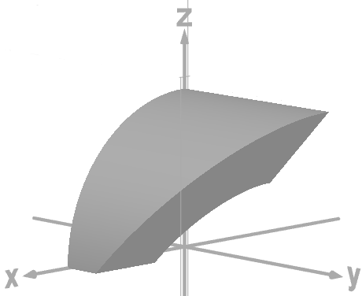
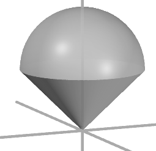
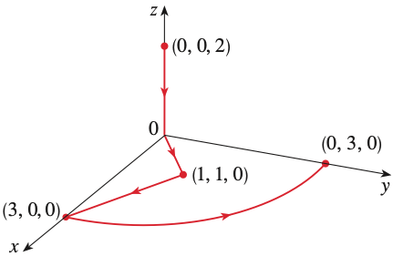

Instructions. (100 points) Sections 15.3-16.6. You may use a calculator. Show relevant work for credit. Most of the integrals need only be set up and not evaluated unless otherwise stated. You should use coordinates in your integrals which give the easiest possible integrals to evaluate. For instance, rectangular coordinates probably shouldn't be used for round things. Answers that are right, but more difficult than need be will not get full credit.
Spherical Coordinates:
\[ x = \rho \cos\theta \sin\phi, \quad y = \rho \sin\theta \sin\phi, \quad z = \rho \cos\phi \]
10 pts
Problem 1: Triple Integral Setup (Rectangular)
Do not evaluate. Setup the integral of \(f(x,y,z) = 4xy\) over the volume \(E\) that lies under the plane \(-x - y + z = 5\) and above the region in the \(xy\)-plane bounded by the curves \(y = \sqrt{x}\), \(y = 0\), and \(x = 4\).
14 pts
Problem 2: Triple Integral (Cylindrical Coordinates)
Do not evaluate. Setup the integral of \(f(x,y,z) = x - z\) where \(E\) is the solid in the first octant bounded by \(x^2 + z^2 = 4\), \(x^2 + z^2 = 16\), and \(y = z + 1\).

The solid E bounded by two cylinders and a plane
The figure shows a 3D coordinate system with x, y, and z axes. The solid region E is in the first octant (where x, y, and z are all non-negative). The region is bounded by two quarter-cylinders centered on the y-axis with radii 2 and 4 (from equations x squared plus z squared equals 4 and x squared plus z squared equals 16), and capped by the plane y equals z plus 1. The solid appears as a curved wedge shape.
14 pts
Problem 3: Triple Integral (Spherical Coordinates)
Do not evaluate. Set up a triple integral to find the volume of the solid that is above the cone \(z = \sqrt{x^2 + y^2}\) and below the sphere \(x^2 + y^2 + z^2 = 36z\).

The solid above the cone and below the sphere
The figure shows a 3D solid that resembles an ice cream cone. The lower boundary is the cone z equals the square root of x squared plus y squared, which makes a 45-degree angle with the z-axis. The upper boundary is a sphere that has been shifted upward. The sphere x squared plus y squared plus z squared equals 36z can be rewritten as x squared plus y squared plus (z minus 18) squared equals 324, showing it is centered at (0, 0, 18) with radius 18. The solid is the region inside this "ice cream cone" shape.
14 pts
Problem 4: Line Integral (Scalar Function)
Do not evaluate. If \(C\) is the part of the circle \(\displaystyle\left(\frac{x}{3}\right)^2 + \left(\frac{y}{3}\right)^2 = 1\) in the right half-plane, find \(\displaystyle\int_C (9x - 2y) \, ds\). Set up and simplify the integral.
20 pts
Problem 5: Green's Theorem
Consider \(\displaystyle\oint_C (1-y)x \, dx + xy \, dy\) where \(C\) is the triangle from \((0,0)\) to \((1,1)\), to \((0,1)\) to \((0,0)\).
(a) (10 pts) Evaluate the integral by using Green's Theorem.
14 pts
Problem 6: Conservative Vector Field (FTOLI)
Evaluate \(\displaystyle\int_C \vec{F} \cdot d\vec{r}\) where \(C\) is the curve from \((0,0,2)\) to \((0,3,0)\) shown in the figure:

The curve C from (0,0,2) to (0,3,0)
The figure shows a 3D coordinate system with a complicated, winding path connecting the point (0, 0, 2) on the z-axis to the point (0, 3, 0) on the y-axis. The path curves through several intermediate points including approximately (3, 0, 0), (1, 1, 0), and (0, 3, 0), making several turns and loops. The complexity of the path suggests this problem is about using the Fundamental Theorem of Line Integrals to avoid parameterizing the curve.
14 pts
Problem 7: Surface Area (Parametric Surface)
Find the surface area of the surface with parametric equations \(x = u^2\), \(y = uv\), \(z = \frac{1}{2}v^2\), where \(0 \leq u \leq 1\), \(0 \leq v \leq 2\).
The parametric surface with x = u², y = uv, z = v²/2
The figure shows a 3D surface that appears twisted or warped, like a curved sheet. The surface is defined by the parametric equations x equals u squared, y equals u times v, and z equals one-half v squared, where u ranges from 0 to 1 and v ranges from 0 to 2. The surface has a distinctive curved shape that twists as it extends in the coordinate space.